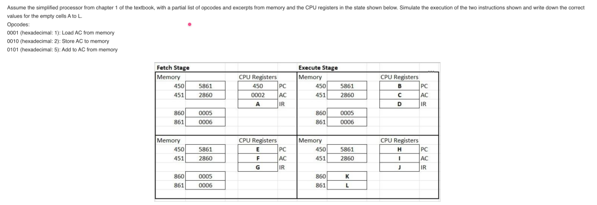

Quiz1-Fall-2026
2026 年秋季测验 1 真题 · 共 20 分
Question 1 · 4 marks
Name and briefly explain two components besides the CPU that modern microprocessors usually contain.
说出并简要解释现代微处理器中除 CPU 以外通常还包含的两个部件。（4 分）
TEXTBOOK SOURCE · 教材原文
- To satisfy the requirements of handheld devices, the classic microprocessor is giving way to the SoC.为满足手持设备的需求，经典微处理器正让位于片上系统（SoC）。
- Other components of the system, such as DSPs, GPUs, I/O devices (such as codecs and radios) and main memory, in addition to the CPUs and caches, are on the same chip.除 CPU 和缓存之外，系统中的其他部件，如 DSP、GPU、I/O 设备（如编解码器和无线模块）以及主存储器，都位于同一个芯片上。
- Cache memory: the first level of the memory hierarchy — invisible to the OS, holds the data and instructions the processor is most likely to need next.高速缓存：存储器层次的第一级 — 对操作系统不可见，保存处理器最可能马上需要的数据和指令。
Question 2 · 4 marks
What does BIOS stand for? Name two of its main purposes. What is the modern version/replacement of BIOS called?
BIOS 代表什么？说出它的两个主要用途。BIOS 的现代版本／替代者叫什么？（4 分）
TEXTBOOK SOURCE · 教材原文
- BIOS (basic input/output system).BIOS（基本输入/输出系统）。
- Three purposes served by motherboard ROM BIOS: System BIOS: manages simple devices; Startup BIOS: starts the computer; CMOS setup: changes motherboard settings.主板 ROM BIOS 的三个用途：系统 BIOS 管理简单设备；启动 BIOS 启动计算机；CMOS 设置更改主板设置。
- Motherboards may use these types of firmware: BIOS – used on older motherboards; UEFI – replacing BIOS.主板可能使用的固件类型：BIOS —— 用于较老的主板；UEFI —— 正在取代 BIOS。
- ROM BIOS: Helps start PCs; manages simple devices; changes some motherboard settings.ROM BIOS：帮助启动 PC；管理简单设备；更改某些主板设置。
Question 3 · 3 marks
Briefly describe the main differences between primary and secondary storage.
简述主存储器与二级存储器（外存）的主要区别。（3 分）
TEXTBOOK SOURCE · 教材原文
- Primary storage: provided by random access memory (RAM) — temporary (volatile) storage for data and instructions as they are being processed by the CPU.主存：由随机存取存储器（RAM）提供 — 在 CPU 处理数据和指令时为其提供临时（易失）存储。
- Secondary storage: containing data and programs; cannot be directly processed by CPU.外存：存放数据和程序；不能被 CPU 直接处理。
- Secondary storage is “permanent” (nonvolatile) — remains in storage after the system is power off.外存是“永久性”（非易失）的 — 系统断电后仍保留在存储器中。
Question 4 · 6 marks
Assume the simplified processor from Chapter 1 of the textbook, with a partial list of opcodes and excerpts from memory and the CPU registers in the state shown below. Simulate the execution of the two instructions shown and write down the correct values for the empty cells A to L.
使用教材第 1 章的简化处理器，按下列操作码与内存/CPU 寄存器的状态，模拟两条指令的执行，写出空格 A–L 的正确值。（6 分）

OPCODES · 操作码
- 0001 (hexadecimal 1): Load AC from memory.0001（十六进制 1）：从内存装入 AC。
- 0010 (hexadecimal 2): Store AC to memory.0010（十六进制 2）：把 AC 存入内存。
- 0101 (hexadecimal 5): Add to AC from memory.0101（十六进制 5）：把内存的值加到 AC。
TEXTBOOK SOURCE · 教材原文
- Instruction cycle: the processor fetches an instruction from memory and executes it; the program counter (PC) holds the address of the next instruction to be fetched and is incremented after each fetch.指令周期：处理器从内存取指令并执行；程序计数器（PC）保存下一条待取指令的地址，每次取指后递增。
- The instruction register (IR) contains the instruction most recently fetched.指令寄存器（IR）保存最近取出的那条指令。
- The accumulator (AC) is used to temporarily hold data and results of ALU operations.累加器（AC）用于临时保存数据和 ALU 运算结果。
- The address field of 5861 is 861: add the contents of location 861 (0006) to the AC (0002) → AC = 0008. Opcode 2 in 2860 stores the AC into location 860.5861 的地址字段是 861：把 861 号单元的内容（0006）加到 AC（0002）→ AC = 0008。2860 的操作码 2 把 AC 存入 860 号单元。
Quiz1diagram/
Question 5 · 3 marks
Name and briefly explain three different classes of interrupts.
说出并简要解释三种不同的中断类别。（3 分）
TEXTBOOK SOURCE · 教材原文
- Program: generated by some condition that occurs as a result of an instruction execution, such as arithmetic overflow, division by zero, attempt to execute an illegal machine instruction, and reference outside a user’s allowed memory space.程序中断：由指令执行过程中出现的某种情况产生，例如算术溢出、除以零、试图执行非法机器指令，以及引用超出用户允许的存储空间。
- Timer: generated by a timer within the processor. This allows the operating system to perform certain functions on a regular basis.定时器中断：由处理器内部的定时器产生。这使操作系统能够定期执行某些功能。
- I/O: generated by an I/O controller, to signal normal completion of an operation or to signal a variety of error conditions.I/O 中断：由 I/O 控制器产生，用于表示操作正常完成或表示各种错误情况。
- Hardware failure: generated by a failure, such as power failure or memory parity error. (A fourth class — any three of the four earn the marks.)硬件故障中断：由故障产生，例如电源故障或存储器奇偶校验错误。（第四类 — 四类中任答三类即可得分。）